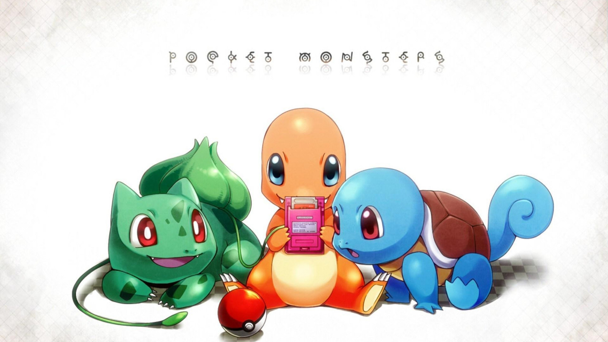

Pokemon Game Seller Arrested
- 
A man has been arrested for selling hacked copies of Pokémon Sword and Shield.
According to an article by the Japanese newspaper Asahi Shimbun (via Serebii), a 23 year-old man was arrested in Nagoya for violating the law by hacking and altering save data for Pokémon Sword and Shield. The man has admitted the charges. Editing save data and distributing said data has been illegal in Japan since 2019. There are currently no details on any fine and/or additional punishments.
According to the report, the man sold a hacked Sobble last April, and received 4,400 yen, which equates to around $41. It is believed that he has made 1.15 million yen, or approximately $10,000, for doing these types of services.
Earlier this week it was revealed that Pokémon Sword and Shield have sold over 20 million copies as of December 31st, 2020. The titles have sold 20.35 million copies to be exact, which was an increase of 1.3 million during the past three months. It was also revealed that Sword and Shield were the first games to reach this milestone since Pokémon Gold and Silver.
A Max Raid event is currently going on in Sword and Shield, and will last throughout the month. During February, certain Fighting- and Psychic-type Pokémon will appear more frequently in Max Raid dens. During this time, players will have a higher chance of running into Machamp, Lucario, Falinks, Gothitelle, Reuniclus, and Orbeetle whenever they enter Max Raid dens. Players will also have the chance of running into the Gigantamax versions of Machamp and Orbeetle throughout the month as well. Since Gigantamax Pokémon are usually incredibly hard to encounter, players should take advantage of this opportunity to capture these Pokémon before the event comes to an end.
Pokémon Sword and Shield are available now for the Nintendo Switch.
Source